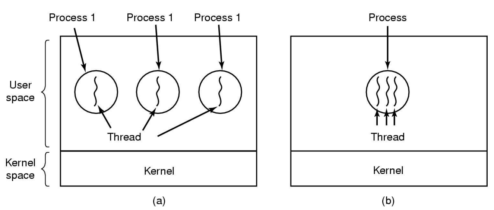

Процесс болон салбар процесс
B210910833/Тэмүгэ/
B211900004/Болор-Эрдэнэ/
B211900015/Ганболор/
B210910082/Ган-Эрдэнэ/
Процесс гэж юу вэ?
-
Process
Процесс гэдэг нь үйлдэлийн системийн удирдлаган доор, төв процессорт гүйцэтгэгдэх ажлыг хэлнэ.
Процессын загварууд

Загвар(A)
Бүх программ нэгэн зэрэг нэг процесст ажиллана
Загвар(B)
Бие даасан дараалласан процесс ба процесс тус бүр өөрийн хяналтын урсгалтай
Загвар(C)
Заасан агшинд зөвхөн нэг процесс ажиллах бөгөөд хэсэг хугацааны дараа дараагийн процесс ажиллана
Процесс үүсэх үйл явц
-
Систем эхлэх

-
Ажиллаж байгаа процесс өөр бусад процессыг үүсгэж ажиллуулах

-
Хэрэглэгч шинэ процесс үүсгэхийг хүсэх

-
batch эхлүүлэх

Процесс дуусах үйл явц
-
Хэвийн дуусах

-
Алдаатай үед гарах

-
Зайлшгүй нөхцөлд гарах

-
Өөр процессын улмаас болж дуусах

Санах ой дахь процесс - Process in memory
-
Санах ой дахь үйл явц
-
Програмчлалын техник дэх үйл явц
-
Боловсруулалтын ашиг тус, сул тал
Санах ой дахь үйл явц
Програмчлалын техник дэх үйл явц - Боловсруулалтын ашиг тус, сул тал

Процессын төлвүүд - Амьдралын цикл
Процессын хэрэгжүүлэлт
Процессын хэрэгжүүлэлт гэдэг нь үйлдлийн систем процессуудыг хэрхэн удирдаж, гүйцэтгэж байгааг хэлнэ.
-
Процесс үүсгэх
Програмыг ачаалах: Хэрэглэгч програмыг эхлүүлэх үед үйлдлийн систем нь програмыг санах ойд ачаалдаг.
-
Үйл явцын хуваарь
Төлөвлөлтийн алгоритмууд: Үйлдлийн систем нь дараа нь аль процессыг гүйцэтгэхийг тодорхойлохын тулд төлөвлөлтийн алгоритмуудыг ашигладаг. Эдгээр алгоритмууд нь процессорыг гүйцэтгэх дарааллыг удирддаг.
-
Процессын гүйцэтгэл
CPU-ийн гүйцэтгэл: Үйлдлийн систем нь процессуудад CPU-ийн цагийг хуваарилж, зааварчилгаагаа биелүүлэх боломжийг олгодог.
-
Процессын харилцаа холбоо ба синхрончлол:
Процесс хоорондын харилцаа холбоо (IPC): Процессууд нь ихэвчлэн хоорондоо харилцах шаардлагатай болдог. Үйлдлийн системүүд нь мессеж дамжуулах, хуваалцсан санах ой зэрэг IPC-ийн механизмуудыг хангадаг.
-
Үйл явцыг дуусгавар болгох:
Ердийн дуусгавар: Процессууд ажиллаж дуусна.
-
Санах ойн менежмент
Санах ойн хуваарилалт: Үйлдлийн системүүд нь процессуудын санах ойн хуваарилалтыг удирддаг.
-
Нөөцийн менежмент:
Файлын системийн хандалт: Процессууд нь файлаас унших эсвэл файл руу бичих шаардлагатай болох тохиолдол бий. Үйлдлийн систем нь файлын системийн хандалтыг удирдаж, аюулгүй байдлыг хангаж, зөрчилдөөнөөс урьдчилан сэргийлдэг.
Төхөөрөмжийн удирдлага: Процессууд нь техник хангамжийн төхөөрөмжтэй харилцаж болно. Үйлдлийн систем нь төхөөрөмжийн драйверуудыг хангаж, зөрчлөөс урьдчилан сэргийлэхийн тулд төхөөрөмжийн хандалтыг удирддаг. -
Алдаа засах, сэргээх:
Алдаа илрүүлэх: Үйлдлийн систем нь хууль бус зааварчилгаа, санах ойн хандалтын зөрчил зэрэг процессуудын алдааг илрүүлдэг.
Алдаа сэргээх: Үйлдлийн систем нь алдаатай үйл явцыг зогсоох, холбогдох нөөцийг чөлөөлөх зэрэг зохих арга хэмжээг авдаг.
Төлөвлөлтийн алгоритмууд
-
Batch
Нэг цагийн ажлын хэмжээг нэмэгдүүлэх.

Хоорондох хугацааг багасгах.
CPU-ийг үргэлж завгүй байлгах.
-
Interactive
Хүсэлтэд хурдан хариу өгөх.
Хэрэглэгчийн хүлээлтийг хангах. -
Real time
Өгөгдөл алдагдахаас зайлсхийх.
Мультимедиа системийн чанарын доройтлоос зайлсхийх.
Процессын дөрвөн хэрэгжүүлэлт
First come first serve
Scheduling in Batch Systems
Хамгийн эхэнд ирсэн процесс хамгийн түрүүнд ажиллана.
Shortest job first
Scheduling in Batch Systems
Хамгийн бага алхамтай процессоос эхэлж ажиллана.
Round robin
Scheduling in Interactive Systems
Тодорхой агшин тутамд процессыг солих арга.

Priority
Scheduling in Interactive Systems
Давуу эрхийн арга. Хэрэглэгч өөрийн хүссэнээр процессуудаа хуваарилж болно.
Процессорын үзүүлэлт
-
MIPS
1MIPS процессор гэдэг секундэд 1 сая заавар ажиллуулдаг процессор юм.

-
Clock
Процессорын үндсэн үйлдэл клокын тусламжтай гүйцэтгэгддэг. Клокын тооны урвуу хэмжигдэхүүнийг клокын давтамж гэж нэрлэдэг. Клокын давтамж нь PC үзүүлэлтийг хэмждэг индекс болдог.
-
CPI
CPI - 1 зааврыг ажиллуулахад шаардагдах клокын тоо (Cycles Per Instruction)
Дүгнэлт
Процесс болон салбар процесс
Процессууд нь гүйцэтгэх үндсэн нэгжийн хувьд даалгавруудыг жижиг, удирдах боломжтой хэлхээ болгон хуваах замаар компьютерт олон ажлыг үр дүнтэй гүйцэтгэх боломжийг олгодог. Процесс бүр нь бие даасан байдлаар ажилладаг бөгөөд компьютерийн орчинд тусгаарлалт, аюулгүй байдлын мэдрэмжийг бий болгодог.
Процессууд нь системийн нөөцийг үр ашигтай ашиглах боломжийг олгож, янз бүрийн програм, даалгавруудыг жигд гүйцэтгэх боломжийг олгодог.Салбарлах нь процессыг олон урсгалд хуваах боломжийг олгодог бөгөөд тус бүр нь өөр өөр ажлыг нэгэн зэрэг гүйцэтгэх чадвартай. Энэхүү зэрэгцээ гүйцэтгэл нь системийн ерөнхий гүйцэтгэлийг сайжруулж, нарийн төвөгтэй ажиллагаа, тооцооллыг илүү хурдан гүйцэтгэх чадвартай болгодог.
Салбарын үйл явц нь даалгавруудыг нэгэн зэрэг хувааж, боловсруулах боломжтой хувилбаруудад маш чухал бөгөөд тэдгээрийг дуусгахад шаардагдах хугацааг эрс багасгадаг.

Бусад мэдээлэл
Гадаад болон монгол